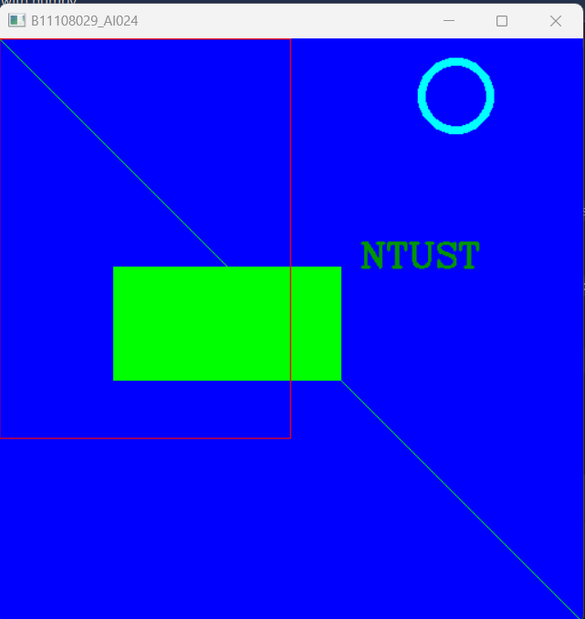

AI024
自製繪圖板：圖形與文字繪製
建立畫布，並用 OpenCV 繪製矩形、圓形、直線與文字。
功能簡介
本程式創建一個畫布，並使用 OpenCV 的基本繪圖功能繪製矩形、圓形、直線與文字。此程式可作為圖形視覺化基礎練習，也適合進一步開發互動式繪圖工具。
成果展示

程式碼片段
AI024｜圖形與文字繪製
import cv2
import numpy as np
# 建立 512x512 的黑色背景畫布
img = np.zeros((512, 512, 3), np.uint8)
cv2.imshow("Black Image", img)
# 改變整張圖顏色為藍色背景
img[:] = 255, 0, 0
# 繪製綠色區塊（中間矩形）
img[200:300, 100:300] = 0, 255, 0
# 畫對角線、矩形、圓形與文字
cv2.line(img, (0, 0), (img.shape[1], img.shape[0]), (0, 255, 0), 1)
cv2.rectangle(img, (0, 0), (255, 350), (0, 0, 255), 1)
cv2.circle(img, (400, 50), 30, (255, 255, 0), 5)
cv2.putText(img, " NTUST ", (300, 200), cv2.FONT_HERSHEY_COMPLEX, 1, (0, 150, 0), 2)
cv2.imshow("A11408001_AI024", img)
cv2.waitKey(0)